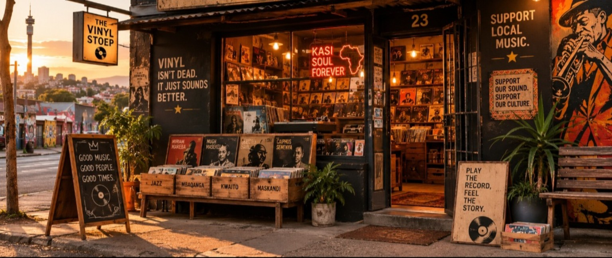
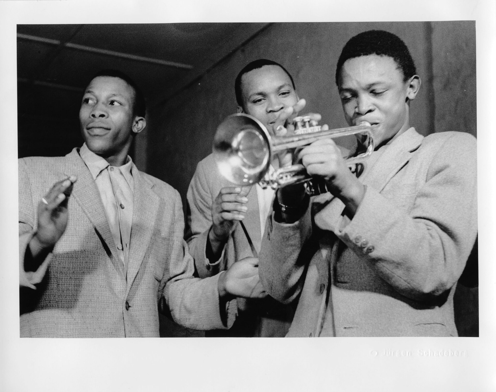
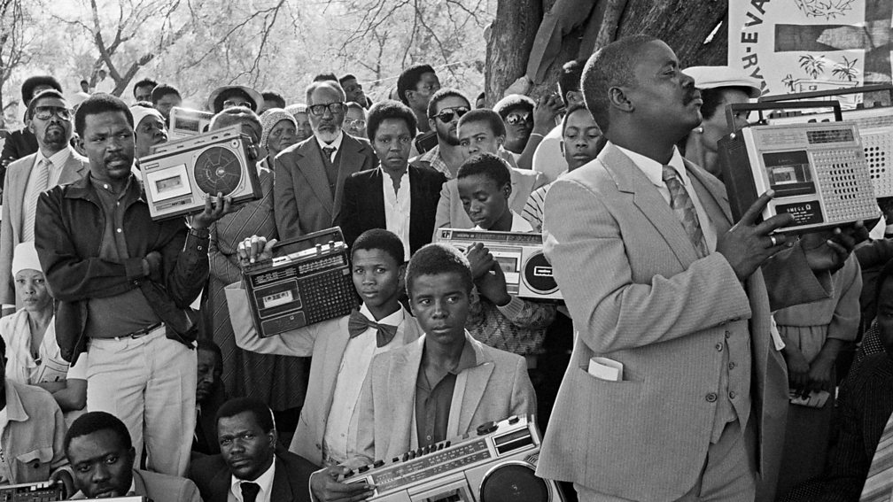
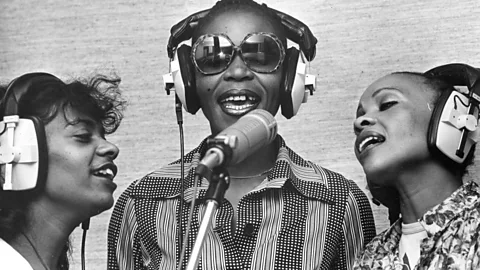
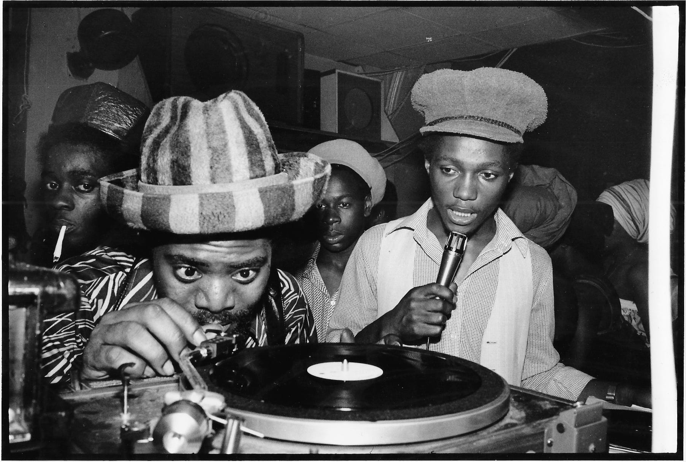

About Us
The Vinyl Stoep is a fictional independent South African record store established in 2019 in Johannesburg. Inspired by South Africa's rich musical heritage, the store specializes in new and pre-owned vinyl records, CDs, turntables, and music memorabilia. It also promotes local artists by stocking South African jazz, kwaito, amapiano, gospel, rock, and Afro-pop records alongside international classics. The business aims to preserve the culture of vinyl collecting while introducing younger generations to analogue music.

We value heritage, authenticity, community, quality, inclusivity, and the power of music to connect generations. We are committed to preserving South Africa’s rich musical history by celebrating classic records, artists, and musical traditions while supporting local and international talent by providing a platform for both South African and international music. We value genuine and carefully selected music experiences, high-quality products and service, and the nostalgia and storytelling associated with vinyl records.




Why Choose The Vinyl Stoep?
We offer more than just records, we offer a connection to music, culture, nostalgia, and South African heritage. Our carefully curated collection includes vintage, new, and pre-owned vinyl, with a special focus on iconic South African artists and genres. We provide quality records, authentic products, affordable options, and reliable service, while creating a welcoming space for both experienced collectors and people discovering vinyl for the first time. Most importantly, The Vinyl Stoep celebrates the music that shaped generations and keeps the Kasi sound spinning. Get in Touch